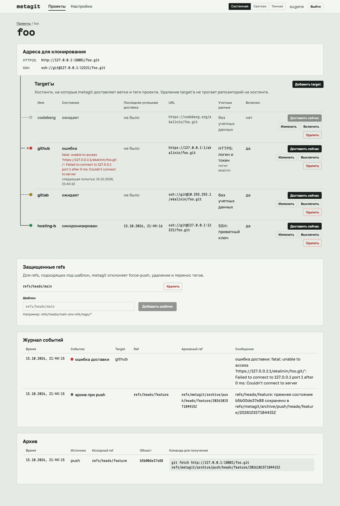
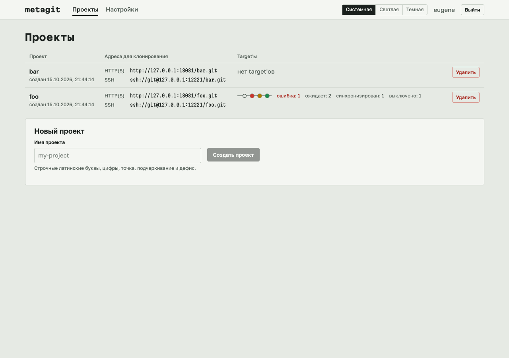

metagit
Self-hosted git remote that mirrors your repos to several hostings and archives overwritten refs.
To a developer it looks like an ordinary git remote. metagit keeps a full copy of the repository and sends branches and tags to several git hostings: GitHub, Bitbucket, Codeberg and any other with git access.
git push metagit main
- github delivered
- codeberg queued
- bitbucket error, retry later
Why
If a project lives on one hosting, you can lose it: the account gets blocked, the hosting shuts down, a mistaken force-push wipes out the history. metagit keeps copies in several places and does not lose previous states of branches.
How it works
- metagit is the source of truth
-
Sync is one-way: changes arrive only through a push to metagit, the hostings get a copy.
- Delivery is asynchronous
-
A push succeeds as soon as metagit has saved the changes. Then metagit waits a few seconds for the delivery results and prints them in the push output:
remote: metagit: github: delivered remote: metagit: codeberg: queued remote: metagit: bitbucket: error: fatal: Authentication failed ... (retry later)A failed delivery is retried automatically with a growing interval, from 15 seconds to 30 minutes.
- Only branches and tags are sent
-
Branches and tags on a hosting that metagit did not send there, for example branches for pull requests, are left alone.
- Nothing is lost
-
Before a force-push, a branch deletion or a tag move, the previous value is saved in
refs/metagit/archive/push/.... For protected branches and tags such pushes are rejected. - Changes made on a hosting
-
If a branch on a hosting was changed bypassing metagit (for example, a merge in the hosting's web interface), metagit saves the hosting's state in
refs/metagit/archive/targets/<id>/..., overwrites the branch with its own value using--force-with-leaseand records an event in the project log. - Notifications
-
The status of every target and the event log are in the web console.
Web console


Quick start
You need Linux or macOS with git 2.30 or newer and an OpenSSH client (ssh). To build: Go 1.26 or newer, Node.js 24 or newer.
Ready binaries for Linux and macOS (amd64 and arm64) are on the releases page.
-
Build
You get one binary,
bin/metagit, with the web console built in.make build -
Create the owner
metagit has exactly one owner, and it is created only by a command on the server. The password is asked in the terminal.
./bin/metagit owner create --name dev --data-dir ./data -
Start the service
The web console, the API and git over HTTP listen on
:8080, git over SSH on:2222../bin/metagit serve --data-dir ./data -
Create a token and a project
Open the web console and sign in. In Settings, create a git access token (it is shown once) and, if you need SSH, add your public key. Then create a project.
-
Push to metagit
The project page shows its clone addresses.
# HTTP(S): any login, the password is a metagit token git remote add metagit https://git.example.com/foo.git # SSH git remote add metagit ssh://git@git.example.com:2222/foo.git git push metagit main -
Add targets
A target is a repository on a hosting: a URL and credentials. Create the repository on the hosting beforehand.
Use
https://...with a login and a token (for example, a GitHub fine-grained personal access token with write access to contents), orssh://...orgit@host:pathwith a private SSH key without a passphrase (for example, a deploy key with write access).
Installing on a server (a system user, the master key, systemd, TLS) and all metagit serve settings are described in INSTALL.md.
Security
- Run metagit as a separate system user: hosting credentials are passed to child git processes through the environment.
- Target credentials are stored encrypted (AES-256-GCM) and are not shown in the web console, logs or push output.
- The owner password is stored as an argon2id hash, sign-in attempts are rate limited.
- The SSH server accepts only the owner's keys and runs only
git-upload-packandgit-receive-pack.
Not in this version
- Git LFS, wiki, releases, issues and pull requests.
- Several users.
- Two-way sync.
- Creating repositories on hostings through their API.
- Sending archived refs to hostings.
- Notifications outside the web console.